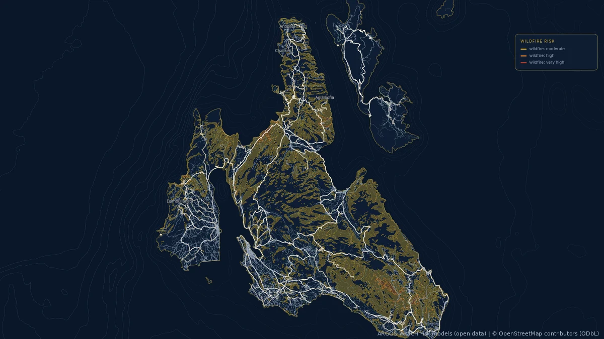

Kefalonia, through its data01 / Geospatial
Independent · Open source
ARGOS : :
A digital twin of Kefalonia, in development.
An independent, open-source digital twin in development, connecting Kefalonia's geography, infrastructure and changing environmental conditions. A growing system for exploring the island through its data.
I build the system from ingestion and spatial processing to the API and interactive map, with documented sources, methods and limitations.